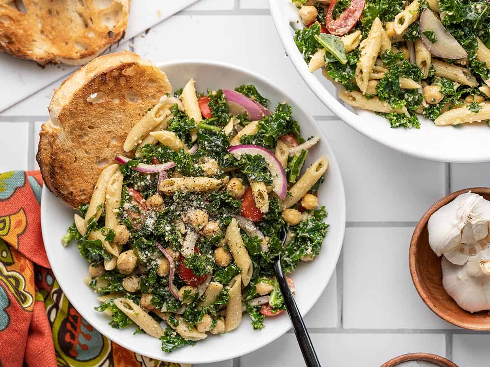

Kale Pasta

Description
Pasta combined with kale and other vegetables
Steps
- Make the vinaigrette first. Whisk together the olive oil, balsamic vinegar, mayonnaise, Dijon, minced garlic, basil, salt, and pepper in a bowl until smooth and creamy. Set the dressing aside.
- Bring a pot of water to a boil for the pasta. Once boiling, add the pasta and boil until tender (7-8 minutes). Drain the pasta in a colander and allow it to cool
- Add the kale to a large bowl. Drizzle ⅓ of the prepared balsamic dressing over the kale and then use your hands to massage the dressing into the kale. Massage the kale for 3-5 minutes, or until it has wilted to half its volume.
- Slice the grape tomatoes in half, thinly slice the red onion, and rinse and drain the chickpeas.
- Add the drained and cooled pasta to the bowl with the kale, along with the tomatoes, onions, chickpeas, and Parmesan.
- Pour the rest of the dressing over top, then stir the salad until everything is evenly combined and coated in dressing. Add salt and pepper to taste, then serve.